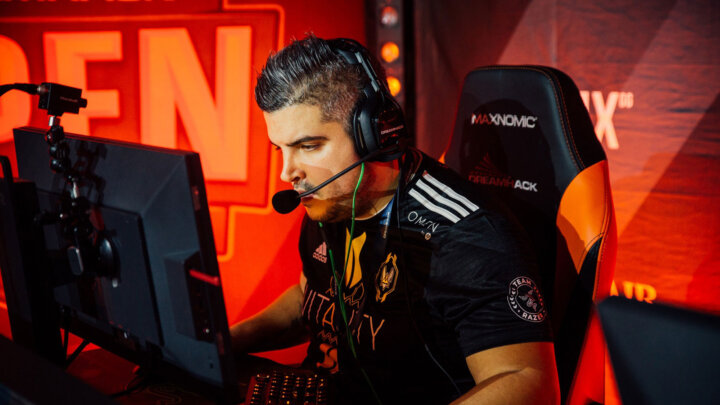

RpK to step down from Vitality roster after BLAST Premier Spring Showdown
French rifler Cédric “RpK” Guipouy will be stepping down from the active roster of Team Vitality after the BLAST Premier Spring Showdown.
The news of the roster change was announced through the Twitter account of Team Vitality, which also featured a statement on RpK leaving the active line-up. “The team is facing some difficulties and we need to find a new pace. It’s never easy to let a legendary, inspiring and consistent player such as RpK step back from competition, and we’ll do everything we can to support him in what’s yet to come.”
The 31-year-old French rifler is one of the most experienced CS:GO players still competing today, going back all the way to Counter-Strike: Source, having started his career back in 2007. During his career he also played for organisations such as VeryGames, G2 Esports and Team Envy. His spot on the roster will be filled by young French player Jason “Kyojin” Nguyen Van, who thanked Vitality for the opportunity.
Things aren’t going all that great for Team Vitality, who surged to the top of CS:GO towards throughout 2019, continuing their strong streak in 2020 with victories at the BLAST Premier Spring 2020 European Finals and IEM XV: Beijing Online Europe. Lately their results have become a lot more inconsistent, with them losing out in the group stage of both IEM Katowice and ESL Pro League Season 13. They’ll be looking to regain their form as a new player enters the roster.